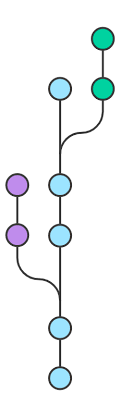
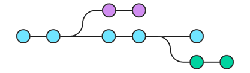

Exemplo de Colaboração com Git
 O Git é uma das melhores ferramentas para se trabalhar em projetos em equipe, com várias ferramentas de análise, criação de repertórios, rastreabilidade de erros, distribuir versões e muitas outras funções.
Um exemplo para começar a utilizar o Git: criar um projeto colaborativo entre alunos de uma faculdade utilizando o Git.
Para que o projeto seja trabalhado em equipe na internet, é preciso que todos os alunos participantes precisam do Git instalado em seus computadores, devem configurá-los e conectá-los a uma plataforma como GitHub ou GitLab.
Feito esses primeiros passos de configuração, agora um dos integrantes deve criar o repositório do projeto em uma das plataformas escolhidas, enquanto os outros deverão dar "fork" nesse repositório.
Em seguida, os que deram "fork" precisarão fazer a clonagem do repositório para sua máquina usando o link e o seguinte comando no terminal:
$ git clone link-do-repositório
Concluindo essa etapa, a equipe pode começar a desenvolver seus projetos em seus editores de texto que preferirem (Visual Studio Code, Brackets, Notepad++, Sublime Text, ...).
Terminado o código desenvolvido, deve-se digitar os seguintes comandos:
$ git remote -v
Caso apareça "ORIGIN" é que você clonou o repositório, caso seja "UPSTREAM" é o repositório original.
Para adicionar um link para o repositório upstream, deve seguir este comando com o nome de usuário da pessoa que criou o repositório e o nome do repositório:
$ git remote add upstream https://github.com/usuario/repositorio.git
Para adicionar um link para o repositório origin, deve seguir este comando com o seu nome de usuário e o nome do repositório que efetuou o fork:
$ git remote add origin https://github.com/usuario.repositorio.git
Por sua vez, todos devem digitar:
$ git pull upstream master
Todos baixarão para as suas pastas qualquer atualização do repositório upstream, caso seja inexistente.
Por ora, foi atualizado somente na máquina local dos integrantes, deve-se atualizar também a plataforma remotamente. Um de cada vez, todos devem digitar:
$ git add .
$ git commit -m "Comentário"
$ git push origin master
Lembrando: o comentário é utilizado para indicar as alterações feitas no código-fonte do projeto da equipe.
Em seu repositório clonado, o usuário que criou o repositório deve verificar o código do restante, fazendo um "New Pull Request" na plataforma.
Dessa forma, todos que precisarem colaborar com um projeto de desenvolvimento de código, deve seguir os passos anteriores e desfrutar livremente da ferramenta!